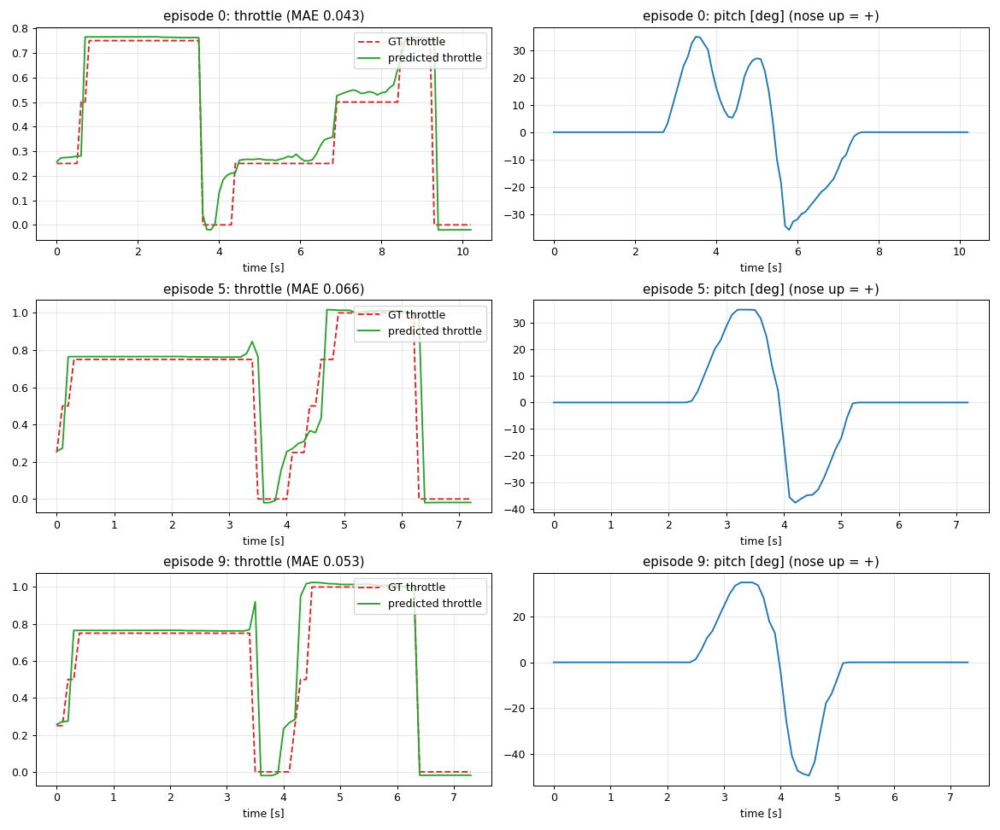
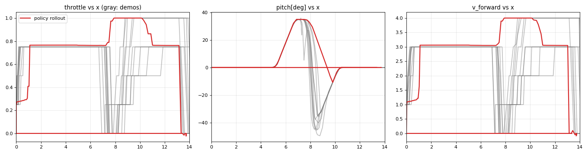

建設機械・災害対応ロボット・惑星探査ローバーなどの不整地走行ロボットでは、地形に応じて速度を切り替える操縦技能が必要になる。 本課題では、Ignition Gazebo 上に砲塔付きの装軌車両（多輪スキッドステアで履帯を模擬）を自作し、操縦経験のある人のテレオペから ACT（Action Chunking with Transformers）を学習して、速度の切り替えを自律的に行わせる。
本レポートは第1の地形「突堤」（台形の山）の検証結果である。突堤を全開のまま越えると車体が跳ねて危険だが、 ゆっくり走り続けると時間がかかる。「登りは速く、頂上の手前で減速し、越えたら再び加速する」という使い分けを、 10 回のデモから学習できるかを確かめた。第2の地形（砲身が壁に当たる対戦車壕）は今後の課題である。
学習した方策（ACT）は、10 試行すべてで跳ねずに通過した。所要時間は全開のルールベースと同等（3.6 秒対 3.8 秒）で、 跳ねないルールベース（一定の低速）の 2〜4 倍速かった。一方で、行動チャンクの実行ステップ数を学習時の設定（1）のままにすると跳ねずに通過できたのは 1/10 にとどまり、 この設定が結果を大きく左右することも分かった（第5章）。
tools/gen_tank_model.py）。[throttle, steering, turret_angle]：アクセル（−1〜1、0.25 刻み）、ハンドル（左右、中立キーで戻す）、砲塔角。操縦経験者の意見でキー割り当てを決めた。全開は 4 m/s。[x, z, pitch, v_forward, turret_angle]：世界座標の位置（OdometryPublisher の真値）、IMU のピッチ角（機首上げを正）、車輪オドメトリの速度、砲塔角。地形の局面（登り・頂上・下り）を見分けられるようにした。高さ 1.0 m、斜面 35°、頂上の平らな部分 0.3 m の台形。頂上の縁を鋭くして、全開で越えると車体が跳ねるようにした（tools/gen_berm.py で生成）。
当初は斜面 25°・頂上 2.0 m だったが、操縦者の「もっと尖らせて、急にして」という意見で変更した。
/tank/state と /tank/command を 10 Hz に再サンプルして LeRobotDataset 化（815 フレーム）。操縦の前後の停止区間は切り詰めた（第5章）。/tank/state を受けて 10 Hz で /tank/command を配信。行動チャンクを 8 ステップ続けて実行する。評価は、車両を初期位置に戻して走行させ、x ≧ 13 m（山を越えた先）に達するまでを 1 試行とし、各条件 10 試行ずつ行った。 「跳ねずに通過」は、通過し、かつ最高の高さ z < 1.70 m、かつ空中時間 < 0.6 秒（IMU の加速度の大きさが 3 m/s² 未満の時間）とした。 閾値は、操縦者のデモ（最高 z が 1.40〜1.61 m）と全開（約 1.84 m）の間に置いた。所要時間はシミュレーション時刻で測った。
| 方式 | 通過 | 跳ねずに通過 | 最高 z（平均） | 空中（平均） | 所要時間（平均） |
|---|---|---|---|---|---|
| ルールベース：全開（1.0）一定 | 10/10 | 0/10 | 1.84 m | 0.89 s | 3.8 s |
| ルールベース：0.5 一定 | 10/10 | 10/10 | 1.57 m | 0.50 s | 7.2 s |
| ルールベース：0.25 一定 | 10/10 | 10/10 | 1.46 m | 0.32 s | 13.6 s |
| ACT（行動チャンクの実行 1 ステップ） | 10/10 | 1/10 | 1.70 m | 0.77 s | 3.4 s |
| ACT（実行 8 ステップ） | 10/10 | 10/10 | 1.54 m | 0.34 s | 3.6 s |
| ACT（実行 16 ステップ） | 10/10 | 6/10 | 1.60 m | 0.49 s | 3.8 s |
速く走ると跳ね、跳ねないようにすると遅いというトレードオフが、ルールベースの結果にはっきり出ている。 ACT（8 ステップ）は、全開と同じ速さのまま、頂上の手前で減速して跳ねを避けた。これは、状況（ピッチと位置）に応じた速度の切り替えを方策が獲得したことを示す。



最初に学習した方策は、学習データ上の予測は良好（平均絶対誤差 0.09〜0.12）だったのに、実行すると動き出さなかった。 各エピソードの先頭には、操縦を始める前の停止区間が 1.5〜3.6 秒あり、その間の観測は毎回同じ（x=0、速度 0）なのに、動き出す時刻は毎回違う。 方策には時刻の情報がなく、最頻値である「止まったまま」を出力していた。実行では、後ろへ 0.8 m ずるずる下がり、観測が変わってからようやく動き出した。 対策として、変換時に、操縦を始める前と終えた後の停止区間を切り詰めた（1289 → 815 フレーム）。予測の誤差は約半分になり、最初のフレームから動き出せるようになった。
次に、実行したところ、通過はするが頂上でスロットルを 0.79 から 1.0 へ上げてしまい、跳ねずに通過できたのは 1/10 だった（図7）。 デモでは、頂上で減速する位置が x=6.8〜7.8 m と約 1 m ばらついていたため、頂上付近のほぼ同じ状態に対して「落とす」と「保つ」の 2 つの答えがあり、方策が決めきれなかった。 さらに、毎ステップ行動チャンク（1.6 秒先まで）の先頭 1 個だけを実行していたため、「少し先で減速する」という計画の手前の部分しか使われていなかった。 いったん減速が遅れるとデモに無い状態に入り、さらに外れる（共変量シフト）。
対策として、1 回の推論で得た行動チャンクを 8 ステップ（0.8 秒）続けて実行したところ、10/10 で跳ねずに通過した。再学習は不要だった。 ただし長すぎる 16 ステップでは 6/10 に下がり、状況の変化に追従できなかった。ACT の行動チャンクの考え方が、このタスクで効くことが確認できた。

tank_driver に 0.5 秒のウォッチドッグを入れ、指令が途絶えたら停止する。コード一式（モデル・地形の生成スクリプト、ROS 2 パッケージ、変換・学習の設定、評価スクリプト、README の手順）は GitHub のリポジトリにある。評価結果の全試行の記録は results/ にある。
参考：Qiita「gazeboとROS2を連携してロボットを操作する」（N622）— ROS 2 と Gazebo の連携の考え方を参考にした（コードとモデルは自作）。 matsuolab/pai_training — rosbag から LeRobotDataset への変換と ACT の学習・推論の仕組みを参考にした。 LeRobot（Hugging Face）。T. Z. Zhao et al., “Learning Fine-Grained Bimanual Manipulation with Low-Cost Hardware”, 2023（ACT）。 車両のパラメータはすべて架空の値である。